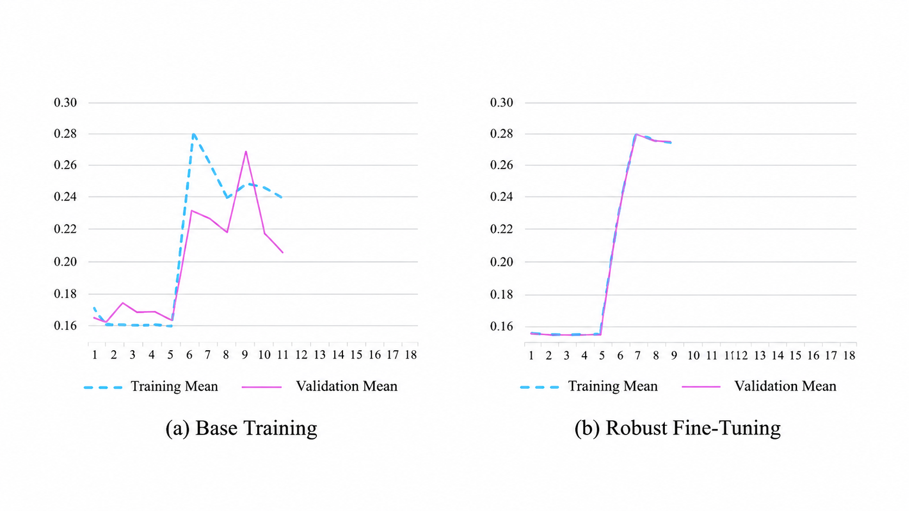
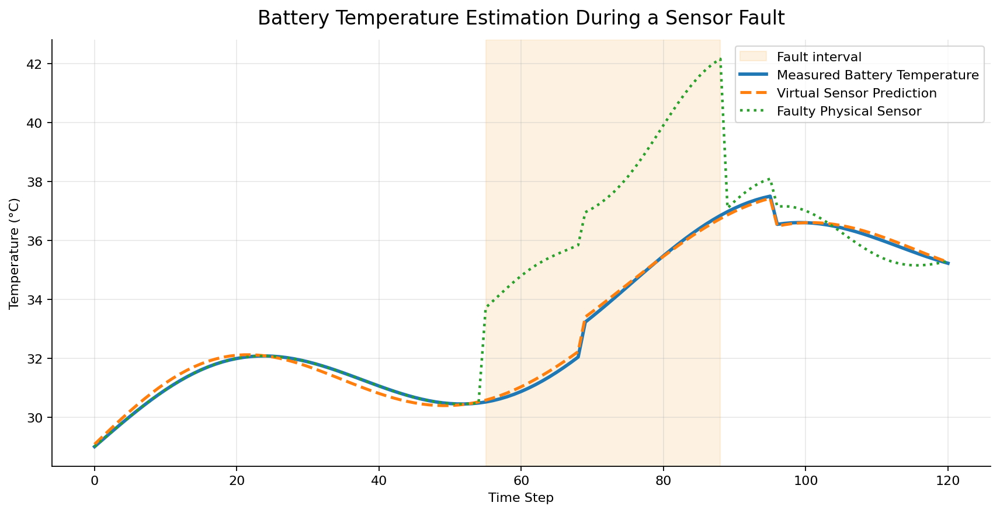

Fault-Tolerant Virtual Sensor for EV Battery Systems
Designed a robust deep-learning virtual sensor to estimate lithium-ion battery temperature and support Battery Management System reliability when physical sensors become inaccurate or fail. The approach uses a BiGRU model, two-stage training and fault-aware evaluation for transient and permanent sensor failures.


1.59°CMAE in nominal conditions
8M+time-series samples
4,477independent test files
1.7 MBcompact model footprint
PythonPyTorch LightningBiGRUTime SeriesFault ToleranceISO 26262